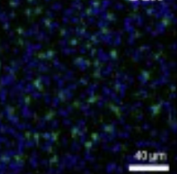
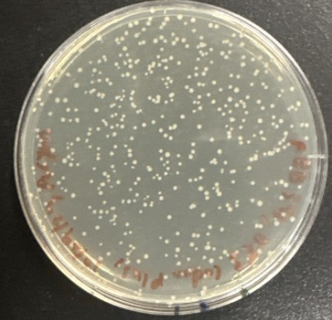

This project investigates the description-experience (DE) gap in decision-making under uncertainty, analyzing how choices based on described probabilities differ from those based on experienced probabilities. Utilizing participant choice behavior data from a study by Thomas Elston (2021), this research aims to determine the influence of outcome uncertainty and gain/loss contexts on decision-making. The project involves downloading, extracting, and processing 60 individual Excel files, filtering for "DescriptionExperience" stimuli and equiprobable conditions. It then computes mean choice probabilities and reaction times across various experimental conditions (e.g., pure description, pure experience, mixed trials) for both gain and loss scenarios, preparing the data for further statistical analysis to uncover systematic biases in judgment and choice.

The Role of SlC1A3 in Alcohol Use Disorder and Alcohol-Associated Behaviors
Aryan Mangla, R. Barchiesi, N. A. Salem, A. Mangal, A. Warden, W. Chen, E. Ostendorff-Kahanek, R. D. Mayfield
This study investigated the role of the glutamate transporter SLC1A3 (GLAST) in alcohol-associated behaviors, building on prior research indicating its dysregulation following alcohol consumption in humans and mice, often more prominently than SLC1A2 (GLT-1). An AAV5 viral vector was designed to specifically knock down (KD) Slc1a3 in the dorsomedial prefrontal cortex (dmPFC) of male C57BL/6J mice without affecting Slc1a2 expression. While the KD of Slc1a3 did not significantly alter voluntary alcohol intake or preference in a two-bottle choice model, even with quinine adulteration, it consistently showed an anxiolytic effect. This anxiolytic effect was more pronounced in animals with a history of alcohol exposure. The findings suggest that while SLC1A3 alone may not regulate alcohol consumption, it plays a role in anxiety-like behaviors associated with alcohol, particularly within the context of prior alcohol exposure. Future research may need to explore the coordinated manipulation of multiple genes within astrocyte-specific networks, as SLC1A3 is a central component of such modules implicated in alcohol dependence.

Investigating the Impact of Cancer-Associated PARP1 Mutations on Enzyme Function
This study aimed to investigate the functional impact of cancer-associated PARP1 mutations, specifically the D229V mutation, on its enzymatic activity and PARylation function. The research successfully introduced the D229V mutation into three different PARP1 expression vectors (pBB204, pBB205, and pBB206) using site-directed mutagenesis, confirmed by agarose gel electrophoresis and DNA sequencing. The successful transformation and expression of the mutant construct in E. coli BL21(DE3) cells further validated the experimental workflow. While this study established a robust molecular biology framework for generating and expressing PARP1 mutants, future research will focus on in vitro PARylation assays to directly assess the impact of these mutations on enzymatic activity and their potential contributions to cellular dysfunction and oncogenesis.